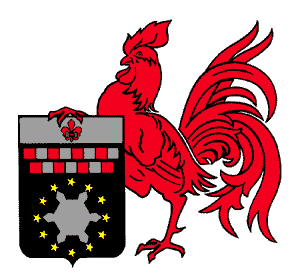
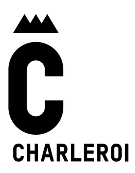

La Carolo
Témoignage de Eric Toussaint
1983, je rentre aux FNDP comme on les appelait à l’époque. Je n’étais pas encore en droit, je n’ai donc pas participé aux tout premier moment. En Mars , je revois mes potes des jésuites: Philippe Bronchain (Bap), et Jean Santacatarina (Santa) flanqué d’un curieux couvre-chef, « Tu viens avec nous, on va au Fac, il y a ceux de la RTM ». La quoi?
J’entre dans ce berceau de la calotte et fit la connaissance de ceux qui deviendront mes amis pour toujours : Jean-Michel Delangre, dit Titus ; John LEBRUN , dit John ; Jean-Philippe Rivière, dit JPH. « Alors les Carolos quand est-ce vous la fondez votre régional? » Le mot était lancé.
Rentrée 1984 quelle effervescence ! Création de la Carolo avec Bap pour président, Santa comme vice et une série de bleus dont moi et un petit nouveau fraîchement sorti des « Jez » aussi: Olivier Bosteels. La RTM et la Carolo avec l’aide de Thierry Quisenaire de Stella ouvre le Petit Bitu 1, rue Lelièvre. Ces deux régionales de la première heures organisent les premiers Baptêmes officiels (mais pas pour les Fac), j’en suis et devient Toutou.
Et comme s’il y en avait pas assez, le 15 novembre 84 elles fondent la CDOSA dont le Chambellan est Santa! Olivier devenu Boss sera le second président et moi le troisième Pays de Charleroi...
L’Ordre du Châssis à Molette
Le Châssis à Molette est un ordre, interne à la Carolo. Les conditions d’accès sont les suivantes: il faut deux ans de services rendus à la Carolo. C’est le Grand-Maître qui remet les titres de chevaliers de l’ordre. C’est aussi lui qui présidera les réunions, avec l’accord des membres présents. (...) Lors de l’intronisation, la personne concernée se verra remettre un vlek, décoration suprême de l’ordre.
Chevalier est un titre, gratifiant les états de services rendus à la régionale. A titre exceptionnel, une personne non Carolo peut se faire remettre les insignes.
(Syllabus de calotte Carolo de Namur 2019-2020)
 
Les Lettres à la Carolo
Tout carolo qui s’aventurerait à passer ses lettres dans une quelconque autre régionale se verrait bien évidemment déchu immédiatement de tous ses droits au sein de la régionale Carolo. Ceci implique tout droit de vote, éventuel poste dans le comité, ou bien encore mouchon à l’œil…
(Syllabus de calotte Carolo de Namur 2019-2020)
La Mine de la 35ème et son commémo
C’est à l’occasion de la 35ème génération de la Carolo qu’a été brassée spécialement une Pays-Noir par la Brasserie du Pays-Noir. Son nom est “La Mine” et c’est une ambrée. Un commémo représentant cette bière a notamment été produit pour l’occasion.
Source : Fares Ben M’Rad, Président Carolo 2019-2020


 |
 |
 |
 |
 |
 |
 |